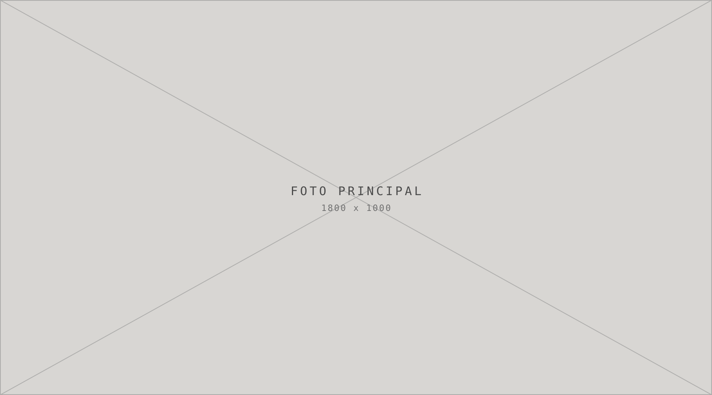
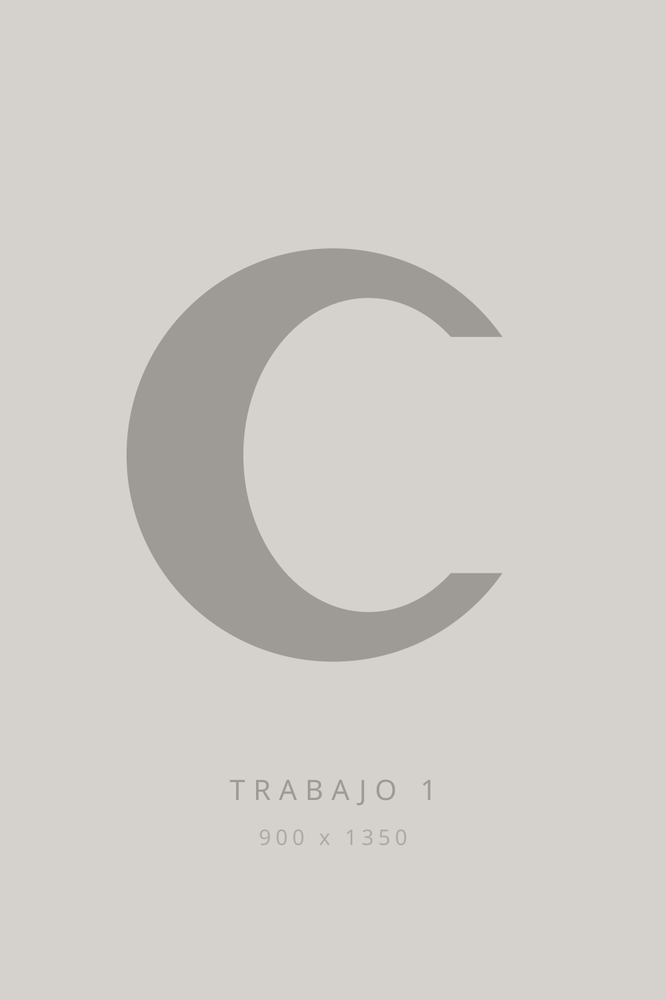
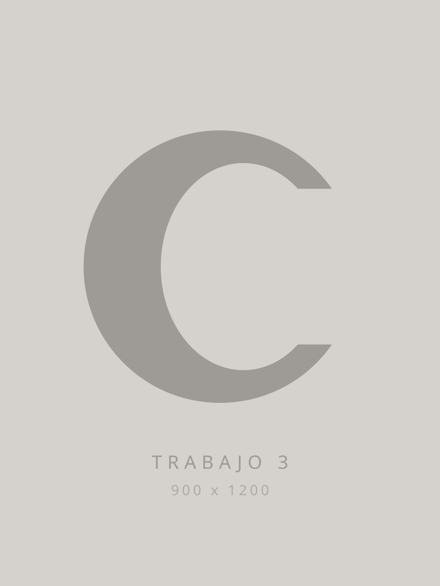
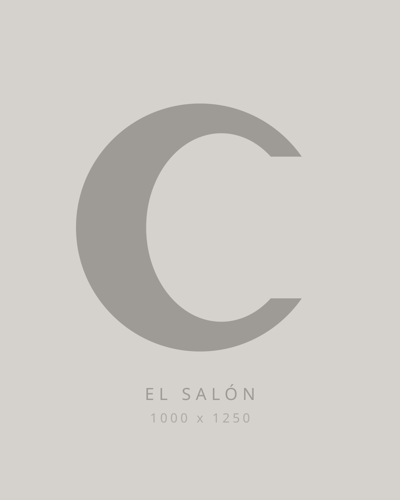

Peluquería · Buenos Aires
Closer
Trabajamos de cerca. Un turno por vez, sin apuro, mirando el pelo que tenés antes de decidir el que vas a llevar.
Pedir turno por WhatsApp
01 — Servicios
El trabajo
-
01
Consultar
Corte
Lavado, corte y secado. Se define en el espejo, con vos, antes de la primera tijera.
-
02
Consultar
Color
Coloración completa o retoque de raíz. Elegimos el tono contra tu piel, no contra un catálogo.
-
03
Consultar
Mechas y balayage
Iluminación hecha a mano, mecha por mecha. Crece parejo y no te obliga a volver en un mes.
-
04
Consultar
Tratamientos
Nutrición, reconstrucción y botox capilar para pelo trabajado. Diagnóstico antes de aplicar.
-
05
Consultar
Brushing y peinado
Para un evento o para el día a día. Si venís con la foto de lo que querés, mejor.
-
06
Consultar
Alisado
Alisado progresivo sin formol. Dura entre tres y cinco meses según el largo.
02 — Galería
Trabajos
Todo lo que ves acá salió de este salón.



03 — El salón
Un sillón, una persona
Closer trabaja con turno reservado y sin superponer clientas. Nadie espera con el color puesto mientras atienden a otra.
Eso también quiere decir que el turno es tuyo: si querés cambiar algo a mitad de camino, hay tiempo para pensarlo.
- Dirección
- A confirmar, Buenos Aires
- Horarios
- A confirmar
Tu próximo corte
empieza con un mensaje.